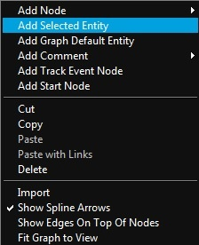
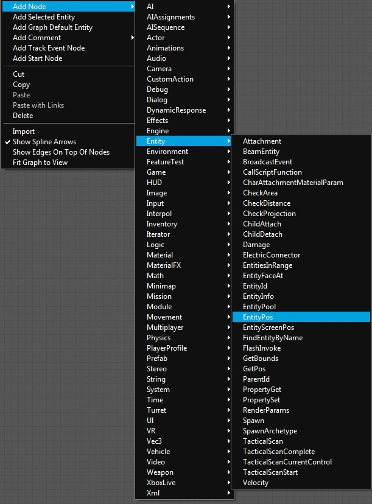
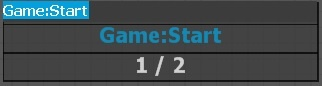
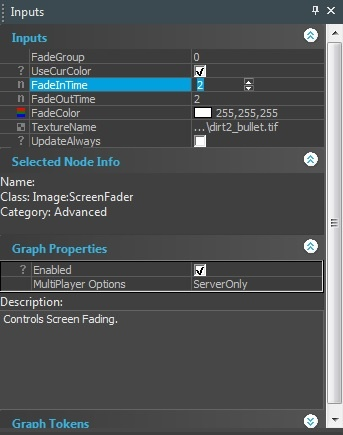
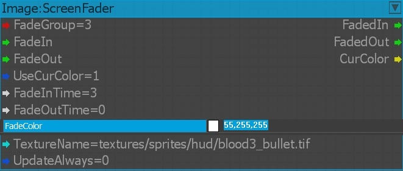

Overview
Adding nodes to a graph can be done in several different ways, depending on whether or not an entity or a component node is added. Any entity in a level, except brushes or portals, can be added to a graph.
Entity nodes always operate on a specific instance of an entity in the level.
Component nodes are independent from entities and use the entities as a target on which to perform certain actions. The target of a node can be reassigned and changed as often as necessary.
Entity Nodes
To add an entity node, select an entity and open the graph. Next, open the graph context menu by right-clicking on the main graph editing pane.
Select Add Selected Entity to insert the entity node at the position of the mouse pointer.
Pic1: Selecting an entity in the Flow Graph editor. 
Component Nodes
Component nodes can be added within the graph and do not require any selected entity. There are three ways to add these nodes,
- Right-click the context menu on the graph edit window.
- Components menu, and you can use the Search keyword window in this menu to locate your component.
- QuickSearchNode (Shortcut: Q).
The example below describes the process for adding an entity (Entity:EntityPos) using the context menu.
To add a new component node:
- Right-click on the main editing pane, and then select Add Node.
- Select a node from a list of sub-folders.
- Select Entity to open the folder with the entity-related component nodes, and then select EntityPos.
Pic2: Adding a component node using the context menu. 
A new Entity:EntityPos node will be placed in the graph.
QuickSearch
To access the QuickSearchNode, you can use the shortcut Q to create a dummy node with a search window (see image below). The default node is the Game:Start node.
The results get auto-filtered as you type the node name or part of it. You can also view the total number of search results that are available (similar to the component list window search feature).
Using the Up / Down keys, you can navigate through the search results if more than one node was found, and press Enter key to create a selected node. Use the Esc key to cancel the node creation.
Pic3: Performing search function using the QuickSearchNode. 
Deleting Nodes
To delete a node, right-click the node and then select Delete. You can also delete it using the Delete key.
Moving and Arranging Nodes
Nodes can be moved around by dragging them to the main editing pane. Multiple nodes can be selected by holding down the Ctrl key and clicking all the nodes that need to be selected.
Alternatively, the mouse can be used to pull a box around all the nodes that need to be selected. The links between the selected nodes will be moved when the nodes are moved, and they will be automatically rearranged.
Copying Nodes
To copy one or more nodes, select the nodes that need to be copied and right-click on any node, and then select Copy . All nodes, including the connecting links, will be copied to the clipboard.
The nodes can be pasted from the clipboard to a graph by selecting Paste in the context menu.
Shortcuts: Hold Ctrl+C to copy the selected nodes, and use Ctrl+V to pastes them. Use Ctrl+Shift+V to paste the nodes along with the links.
Editing Nodes
There are two ways of editing the node properties,
- Navigate to the Node window located on the right hand side of the Flow Graph Editor, under Inputs tab modify the parameters (Pic4).
Pic4: Editing the node parameters using the Inputs tab. 
- Double-clicking the parameters under the Node, which allows you to change any of the user-variable properties directly at the Node location (Pic5).
Make sure you zoom-in on the particular node before you edit using the double-click option.
Pic5: Editing the parameters directly on the nodes. 